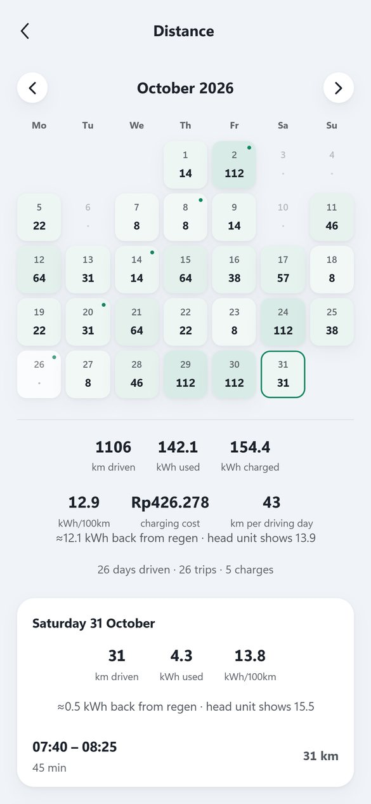

Open source · for CarLinko cars
Your CarLinko car, fully decoded.
A free dashboard for Jaecoo, Omoda and Chery. It reads your own CarLinko account and keeps everything the app throws away: trips, real energy use, charging cost, tyres and remote control.
Free, MIT license. Runs on your PC or an old Android phone. Not affiliated with Chery Group or CarLinko.
What you get
Everything the app forgets, kept.
The CarLinko app shows your car right now and little else. OpenLinko logs every update the car sends, so the numbers add up over days and months.





Features
Built on a real car, checked against real receipts.
Real energy use
kWh/100 km per day, net of regen, beside the head unit's own figure and the WLTP rating.
Charging cost that matches the receipt
Every session with kWh, power curve and cost. On the reference car it matches the charger receipts to 99.6 to 99.9%.
Trips and a driving calendar
Distance, energy and cost for each day, with trips found from the odometer.
Remote control
Lock, A/C with temperature, windows, tailgate and find car, sent the way the official app sends them. Cloud only, no Bluetooth.
Tyres, 12 V and battery health
Tyre pressures on cars with direct TPMS, the 12 V voltage, and charge habits for LFP packs.
Head unit add-on
Climate Gesture for the J5: change fan and temperature with a two finger swipe on the car's own screen.
Supported cars
Four cars, three brands, four countries.
The byte layout held identical on every car owners tried, so it looks like a CarLinko platform layout, not a per model one.
Not listed? The dashboard has a Report my car page that copies a report with the plate, VIN and account ids removed, ready for an Add my car issue.
Install
Runs on something you already own.
One machine stays on and logs the car. Your phone, Android or iPhone, opens the dashboard in the browser.
# after downloading and unzipping the repo > .\start.bat
No coding. Download the repo as a ZIP, unzip it, double click start.bat. It installs Python if needed and opens the dashboard. Sign in with your CarLinko account. ZIP ↓
$ pkg install -y git $ git clone https://github.com/GodrezJr2/openlinko ~/openlinko $ bash ~/openlinko/tools/termux-setup.sh
Install Termux and Termux:Boot from F-Droid, paste these three lines, leave the phone on the charger. It starts again after a reboot.
$ git clone https://github.com/GodrezJr2/openlinko $ cd openlinko && ./tools/install.sh --tailscale
One script sets up the services. --tailscale lets you open it from anywhere without exposing it to the internet.
Docker and Home Assistant setups are in the README.
Privacy
Your account. Your machine. No OpenLinko cloud.
- Stays localPassword, token, VIN and plate live in a local file that is never committed.
- One owner per installIt is not a hosted service and never stores anyone else's account.
- Gentle on your accountLogin retries are rate limited, so a wrong password can't hammer CarLinko.
- Keeps your phone app signed inCarLinko allows one session per account. A second account linked to your car avoids the tug of war.
FAQ
Questions owners ask.
Is there a dashboard for my Jaecoo J5 EV?
Yes. OpenLinko was built on a Jaecoo J5 EV. It reads the same data the CarLinko app shows and keeps the history: trips, energy use net of regen, charging sessions with cost, tyres and 12 V health.
Does it work with Omoda, Chery Tiggo or Exeed?
It is confirmed on an Omoda E5, a Chery Tiggo 7 PHEV and a Chery Tiggo 8 PHEV as well as the J5. Other Chery Group cars on the CarLinko app very likely work, since the byte layout was identical on all four.
Is it an official CarLinko app?
No. It is an independent open source project, not affiliated with Jaecoo, Omoda, Chery or CarLinko. It talks to the same cloud the official app uses, with your own login.
Do I need a server?
You need one thing that stays on: a Windows PC, a Raspberry Pi, a small VPS, or a spare Android phone on the charger. The phone you carry just opens it in the browser.
Does it work on iPhone?
Yes, as the screen you look at: open it in Safari and add it to the home screen. iOS can't run the always on part, so that runs on a PC, server or spare Android phone.
Does it work with Home Assistant?
Yes, through its REST API. Separate Home Assistant integrations for CarLinko cars are also listed in the README.
How much does it cost?
Nothing. It is MIT licensed and runs on hardware you already have.